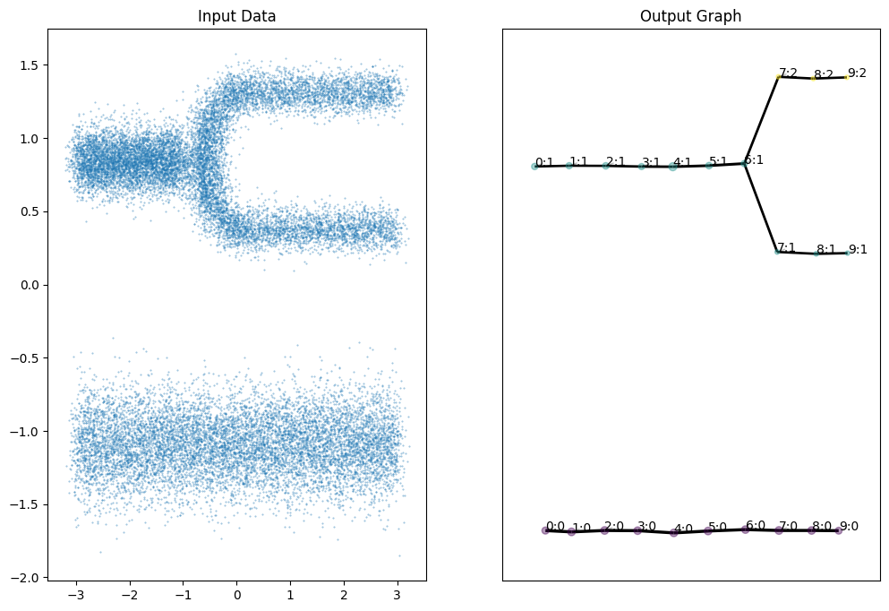

Quickstart
Let’s first grab some example data from the GitHub repository:
[2]:
import numpy as np
import requests, io
import matplotlib.pyplot as plt
response = requests.get(
'https://github.com/TutteInstitute/temporal-mapper/raw/refs/heads/release/docs/data/mapper_demo_data.npy'
)
data = np.load(io.BytesIO(response.content))
print(data.shape)
(23000, 2)
We’ll use projection to the \(x\)-axis as our Morse-type function, and a sklearn clusterer to do single-linkage clustering. Here’s how you fit a TemporalMapper:
[3]:
import temporalmapper as tm
from sklearn.cluster import AgglomerativeClustering
## Single-linkage clustering
clusterer = AgglomerativeClustering(
linkage = "single",
distance_threshold = 0.25,
n_clusters = None,
)
mapper = tm.TemporalMapper(
data[:,0],
data[:,1],
clusterer,
N_checkpoints = 10
)
mapper.fit()
[3]:
TemporalMapper(N_checkpoints=10,
checkpoints=array([-2.62130384, -2.03724074, -1.45317764, -0.86911454, -0.28505144,
0.29901167, 0.88307477, 1.46713787, 2.05120097, 2.63526407]),
clusterer=AgglomerativeClustering(distance_threshold=0.25,
linkage='single',
n_clusters=None),
data=array([[ 0.65446777],
[ 0.90846078],
[ 0.82000801],
...,
[-0.99391809],
[-0.78609027],
[-1.01617254]], shape=(23000, 1)),
time=array([-2.99017489, -3.0464961 , -3.13314192, ..., 2.80891315,
2.78041249, 3.0313684 ], shape=(23000,)))In a Jupyter environment, please rerun this cell to show the HTML representation or trust the notebook. On GitHub, the HTML representation is unable to render, please try loading this page with nbviewer.org.
Parameters
| time | array([-2.990...hape=(23000,)) | |
| data | array([[ 0.65...pe=(23000, 1)) | |
| clusterer | Agglomerative...clusters=None) | |
| N_checkpoints | 10 | |
| neighbours | 50 | |
| overlap | 0.5 | |
| inclusion_threshold | 0.01 | |
| checkpoints | array([-2.621... 2.63526407]) | |
| show_outliers | False | |
| slice_method | 'time' | |
| rate_sensitivity | 1 | |
| kernel | <function squ...x7f3c62df3d80> | |
| kernel_params | None | |
| verbose | False |
AgglomerativeClustering(distance_threshold=0.25, linkage='single',
n_clusters=None)Parameters
| n_clusters | None | |
| metric | 'euclidean' | |
| memory | None | |
| connectivity | None | |
| compute_full_tree | 'auto' | |
| linkage | 'single' | |
| distance_threshold | 0.25 | |
| compute_distances | False |
The output of Mapper is a directed graph; you can access the graph as a NetworkX object via TemporalMapper.G:
[4]:
mapper.G
[4]:
<networkx.classes.digraph.DiGraph at 0x7f3c61fb8a10>
You can also plot the graph using TemporalMapper.temporal_plot; here since our graph is so simple, we will set layout_optimization='none'.
[5]:
fig, (ax1,ax2) = plt.subplots(1,2, figsize=(12,8))
ax1.set_title("Input Data")
ax1.scatter(
data[:,0], data[:,1], s=0.2, alpha=0.5
)
ax2.set_title("Output Graph")
ax2 = mapper.temporal_plot(ax=ax2, layout_optimization='none')
plt.show()

If you have Plotly installed, you can also get an interactive HTML/JS plot:
[ ]:
mapper.interactive_temporal_plot(layout_optimization='none')